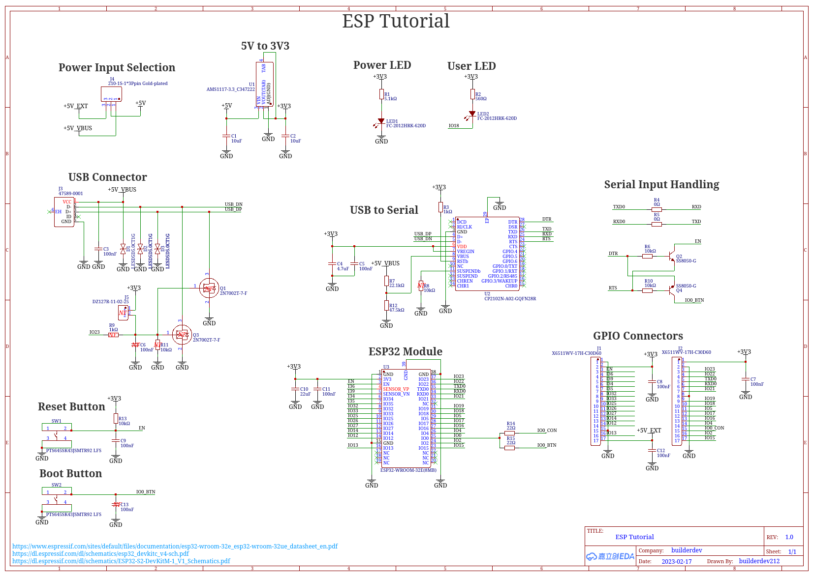
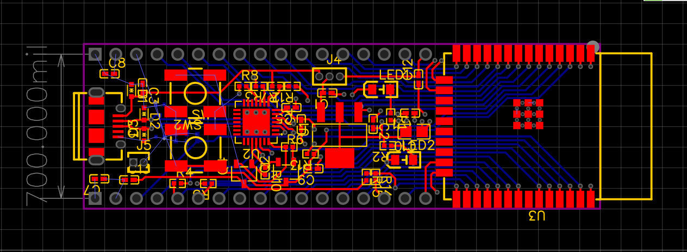
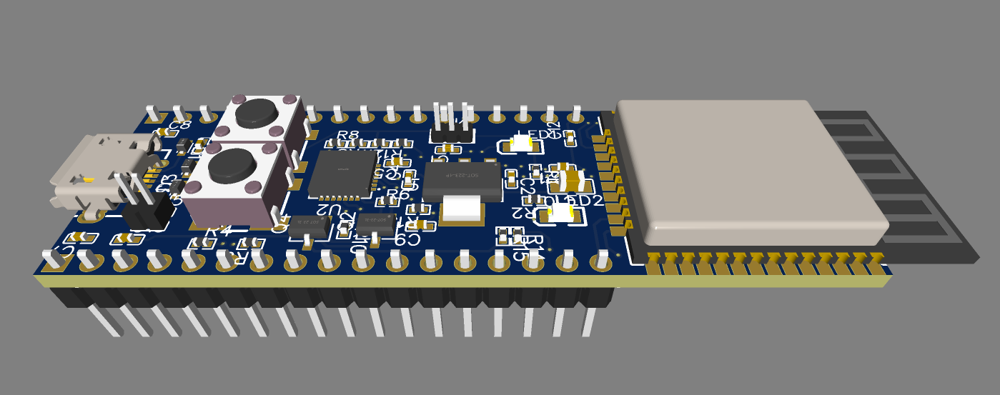

I've been working on the Rook Console on and off for over two years now. It started as a
proof of concept laid out on a breadboard and molded into a bunch of individual PCBs
jerry-rigged into a jank casing. While my current design "works" in a sense, it's a mess
and it has lots of issues. Therefore, I've decided to develop a mainboard for my console.
There are many different pros and cons to this decision. Designing a PCB is a challenging
task and is something that I have no experience doing. Another con is that it will be a
lot more expensive compared to buying cheaper boards that I can easily find on amazon.
However, I am going to design my own mainboard, as the benefits outway the cons. While I
have no experience designing PCBs, I hope to log my journey as a guide to other developers
and hobbyists to help others understand the process. It's certainly a valuable skill and
one that I hope to learn through this process. While my final product will be more
expensive than buying random premade boards and frankensteining them together, I will be
able to make a more compact and reliable console. Soldering a bunch of wires together and
trying to shove it all into a small casing is very difficult and so far I haven't done
the best job of doing it correctly. My goal is to create a design that makes replicating
my build process similar, for both the casing and the hardware.
Let's get to it! >:D
First off, I need to figure out what all my board needs to have on it. Hmm, maybe some
sort of list would be helpful here. insert list here
Weeee. I think I've learned how to make pcbs now. I followed this tutorial video. Massive
props to the guy who made it, it was very easy to follow and really helped me understand
the design process and the software. I didn't fully go through his tutorial but I do
better understand how to use the software now and will be referring back to it for my
implimentation of the ESP32 into my board. I'm using EasyEDA and will most likely use
JCLPCB to manufacture the board. Here are some screenshots of my crappy unfinished dev
board following his tutorial lol, it taught me how to use the software therefore I
believe I'm ready to give my own board a crack.



yes i know i didn't fully finish it. nu shoot pls :(
Hehehe, custom board here i come >:D